内容要点
一段 6 分 51 秒的拉花冠军采访。庄老师请冠军刘强现场制作 2019 年夺冠的经典凤凰图案，并围绕拉花全链路提问：选豆（深烘焙+新鲜，油脂丰富线条才稳定）、萃取量（习惯 20 克，按杯型 300ml 微调）、奶温（油脂好用或图案简单可高一点）、对比度标准（底色干净+线条清晰，底色一致性要高）、比赛瑕疵观（严格会扣分但现实中常忽略，训练要提前规避）。最后冠军给初学者四个核心建议：懂选豆、流速标准或偏慢不能快、浓缩与奶泡同时处理、奶泡打好立刻拉花防分层。
知识结构
庄老师采访拉花冠军刘强，请他现场制作冠军图案。
拉花用深烘焙+新鲜的豆子：油脂更丰富、线条更稳定，不易晕染糊掉；浅烘焙拉花困难。
习惯萃 20 克浓缩；按杯型调整——300ml 杯配 20g，小杯可更少。
油脂好用或图形简单→奶温高一点；油脂难用或图案复杂→低一点。
上帝视角演示 2019 年冠军经典凤凰图案；对比度=底色干净+线条清晰分明，底色一致性要高。
白色线条小瑕疵比赛严格会扣分，现实中可能忽略；赛前训练要提前规避小瑕疵。
四大核心：懂选豆、流速标准或偏慢不能快、浓缩与奶泡同时处理、奶泡打好立刻拉花防分层。
冠军拉花的可复制方法：①深烘焙+新鲜豆子（油脂丰富→线条稳定→对比分明）；②萃取习惯20克，按杯型（300ml）微调；③奶温看油脂难易与图案复杂度微调；④对比度=底色干净+线条清晰，底色一致性要高；⑤比赛心态：接受评审扣分但训练时提前规避瑕疵。初学者先过浓缩与奶泡两关（选豆、流速标准偏慢、浓缩奶泡同时做、打好立刻拉），再谈手法。
00:00-00:32开场：请冠军现场拉冠军图
庄老师开场：「今天很荣幸能够拍到刘强老师制作拉花的部分。」寒暄后直奔主题——请对方做拿手图案。
冠军刘强表示看庄老师想看的图案都可以，并确认可以展示自己夺冠时的图案。
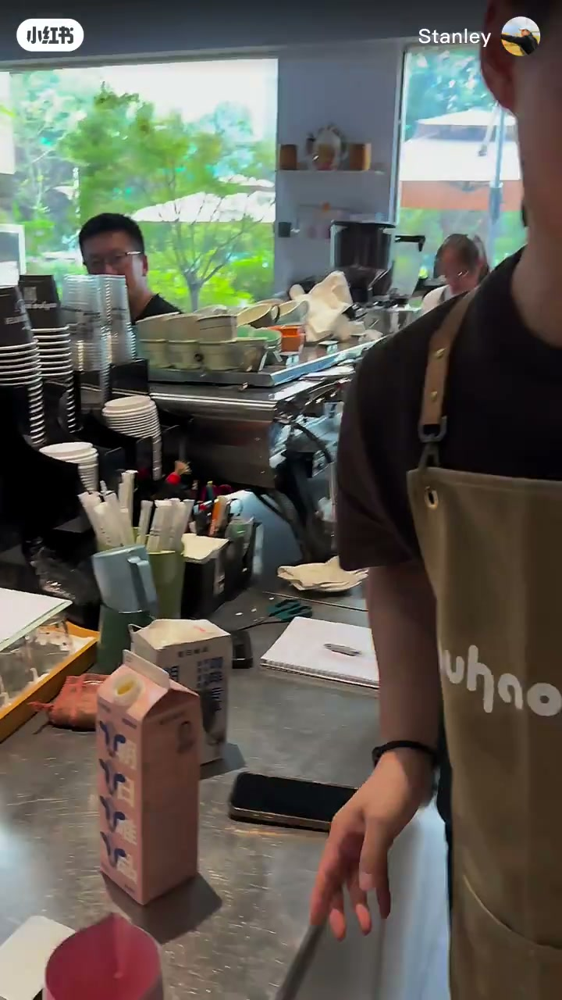
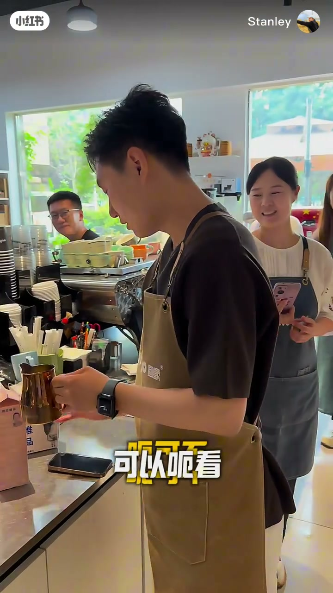
00:32-01:28选豆：深烘焙+新鲜
面对「拉花用什么豆子/烘焙度」的问题，冠军的回答干脆：「做拉花还是要烘焙度相对深一点的好用，然后可以新鲜一点。」但也要接受现实——外出比赛给什么豆子就用什么豆子。
深烘焙的目的性：「深一点的话它的油脂会更加丰富，豆子烘焙深了以后拉花时线条会更稳定，不容易出现晕染或者糊掉。」反之浅烘焙豆子拉花比较困难——油脂稳定性、图案黑白分明度、对比度都会不一样。
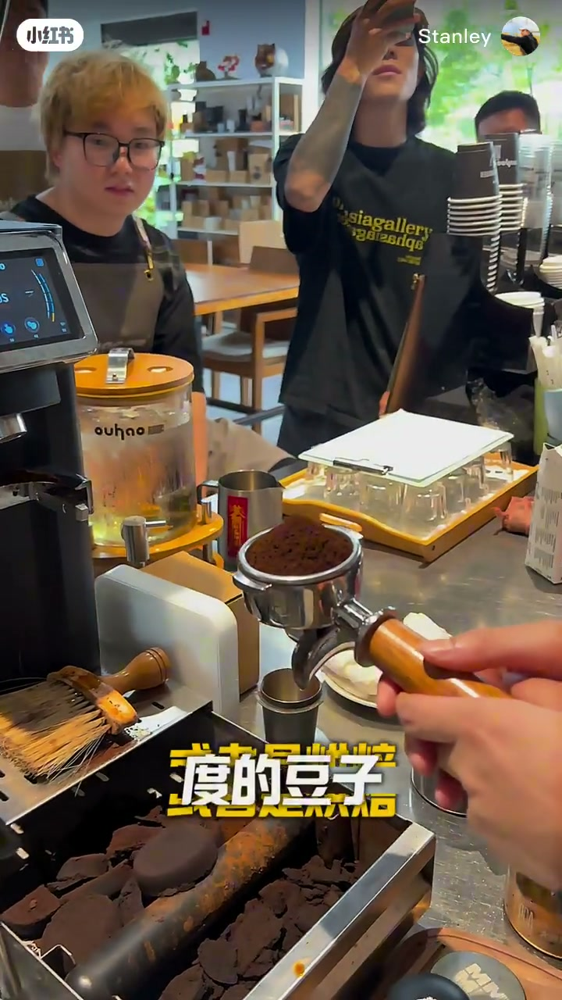
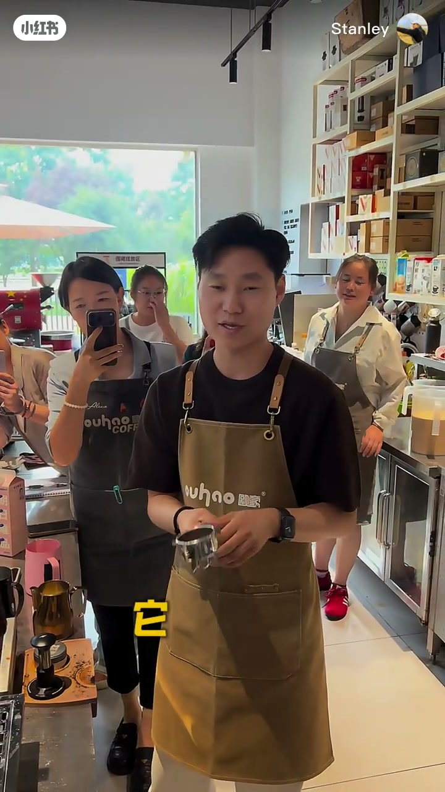
01:28-02:14萃取量：习惯 20 克，按杯型微调
萃取量上冠军很开放：「萃取多少克其实都是可以去做拉花的。」但为了让拉花更好用，个人习惯萃取 20 克。
比例关系（牛奶量与浓缩度）「不会考虑到那么详细」，但会考虑杯型——今天用 300 毫升杯子浓缩就 20 克左右；杯子小的话浓缩适当再小一点。
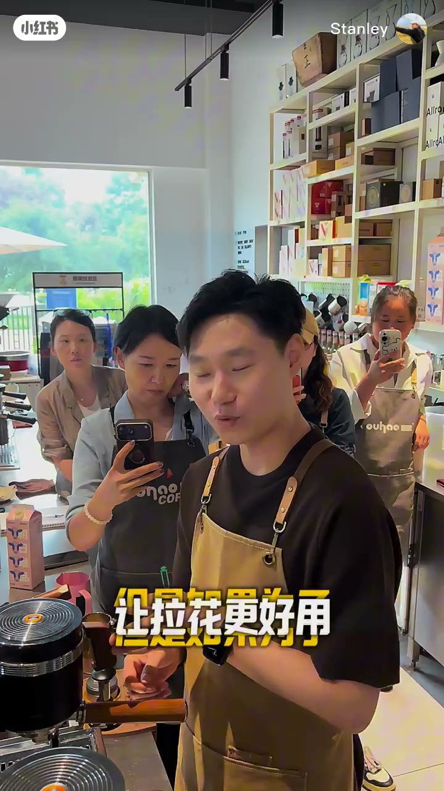
02:14-02:40奶温：看油脂与图案复杂度
打奶温度有没有讲究？冠军的回答是看油脂：「如果油脂比较好用或者图形比较简单，就可以高一点。」
反之，「如果油脂没有那么好用，或者是图案比较复杂，低一点点。」奶温是配合油脂与图案的动态变量。
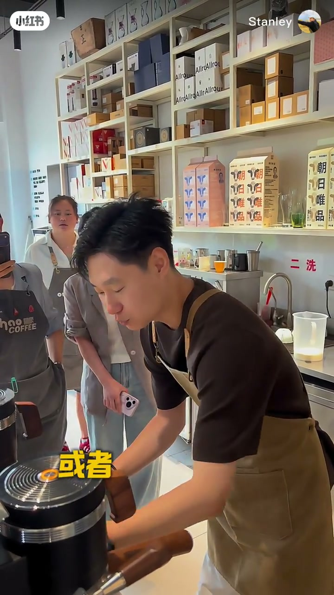
02:40-04:04冠军图案与对比度标准
用上帝视角拍摄拉花过程。完成的图案正是「第一次拿冠军（2019年）比较经典的一个凤凰的图案」。
关于对比度，冠军给出精炼标准：「对比度就是底色要干净，然后线条要清晰分明，就可以了。」并补充：「不一定要让底色颜色很深或者很黑，但是底色的颜色的一致性必须很高。」
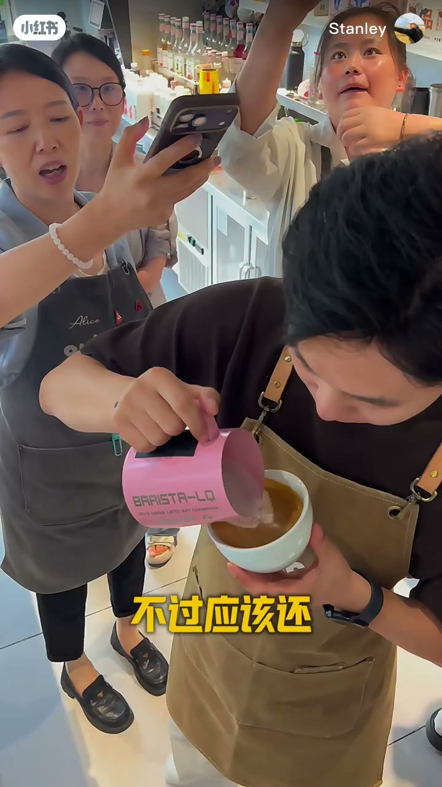
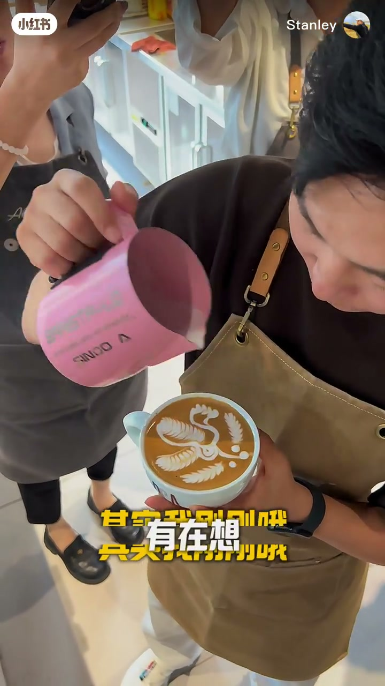
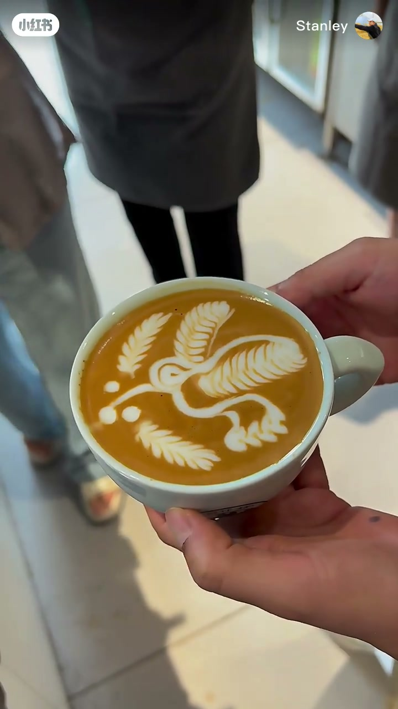
04:04-04:52瑕疵与比赛心态
庄老师指着图案里一点点白色的线条瑕疵问比赛是否会扣分。冠军诚实回答：「这一点点严格来说就会扣，但实际当中可能会忽略。」
更重要的是心态：「如果评委要扣你的分数，你也要接受，因为你是精益求精。」反过来，「到了比赛有点瑕疵的话，能反映给选手也是一个很好的反馈。」所以赛前训练就要严格要求自己，把小瑕疵都规避掉。
04:52-06:51给初学者的四大建议
冠军接触大量基础学员，总结最多的问题集中在浓缩萃取和奶泡上。第一，选豆不了解；第二，萃取流速——「我们都会把它控制在要么是标准流速要么是标准偏慢，绝对不能快」。
第三，顺序错误：「他可能才去打奶泡，这个就是错误的习惯」，正确做法是先把牛奶倒好，萃浓缩的同时打奶泡，保证两者同一时间处理好。第四，奶泡打好必须立刻拉花，「一定不能等，等一会他就会分层」。
冠军也坦诚自学的难点：奶泡对进气与打绵要求很高，家用机器蒸汽力量小很难打出细腻流动性的奶泡。浓缩与奶泡两关过了，才能关注到拉花的手法技巧。
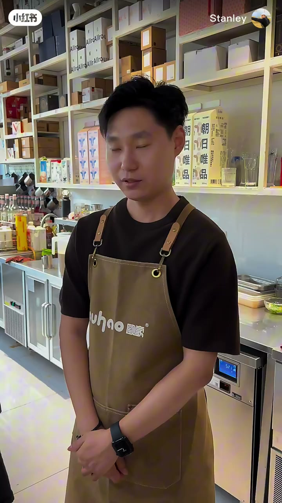
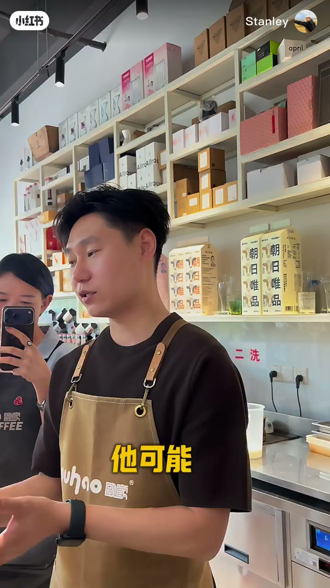
完整转录（195段）
以下文本由 Whisper medium 模型自动转录，可能存在少量识别误差，已尽可能修正。
今天很荣幸能够拍到刘强老师的制作拉花的部分
哈啰刘强老师
是我的荣幸可以出现在庄老师的视频里
没有没有
那等一下要做什么图案
你要看什么图案
呃
可不可以
看一下你的那个冠军的那个图案
冠军的那个图案
可以
那我们现在开始喽
一般我们拉花的豆子
选择了
大概你会建议什么样的一个
类型的豆子或是烘焙度的豆子
呃一般来说
做拉花还是要
烘焙度相对深一点的会好用
然后相对来说
可以新鲜一点
对但是一般我们出去做
拉花就是给我们
什么豆子我们就要用什么豆子
哦那这很厉害哦
那选择深一点的
这种豆子的目的性是什么
深一点的话它的油脂
会更加的丰富
然后豆子烘焙
深了以后在做拉花的时候
线条会更稳定
不容易出现就是后面
线条出现那种晕染
或者糊掉如果浅
烘焙的豆子拉花就会
比较困难一点所以它的油脂
的稳定性跟图案的黑白
的分明度
对比度会是不一样的
那在萃取上来讲
一般你们都会萃取多少的
浓缩液出来首先就是萃取
多少克其实都是可以
去做拉花的但是
如果为了让拉花更好用
我自己的话会
习惯萃取
20克20克
那它有没有一个比例关系
比如说你的牛奶量
的打发的绵密度牛奶
还有浓缩的浓稠度
这些有没有一些比例关系
那个不会考虑到那么详细
但是会考虑到杯型比如说杯子
比如说今天用的是300毫米杯子
那我的浓缩就
会变成在20克
左右
那如果杯子比较小的话
你可能浓缩就可以
适当的再小一点
那在打发牛奶温度上来讲
有没有什么讲究
这个要看油脂
对油脂跟
这个奶用的怎么样
如果油脂比较好用或者图形比较简单
就可以挑一点
如果
油脂没有那么好用或者是
图案比较复杂
低一点点
那我们现在先用上帝的视角
看一下刘翔老师的
图案的制作
哎呀我这个人不够高
有点小尴尬
这个上帝视角
不是那么明显
不过应该还可以看得出来
太稳了
好稳啊
反而是我的手
晃得很厉害
这是你在国内的
那个冠军的图案吗
这个是
第一次拿冠军19年的时候
比较经典的一个风鸟的图案
其实我刚刚
有在想就是你能不能
拉那个准备去世界赛的图案
世界赛的对不能做
对我在想应该是不能做
主要是庄老师的
那个粉丝流量太多
太大了
但这个是
这个是可以做
这个是风鸟吗
对
真是美好清晰哦
对比度非常好
对比度就是底色要干净
然后线条要清晰分明
就可以了
就是不一定要让底色
颜色是很深或者很黑
但是底色的颜色
的一致性必须要很高
那比如说如果去
挑细节的话那比如这一点点的
白的线条
就会有一点点的小小的
瑕疵
这个在比赛上来讲是不是会有一点
扣分
这个如果在比赛里的话
这一点点严格来说就会扣
但实际当中可能会
这一点点的话忽略
但如果评委要扣你的分数
你也要接受
你要接受它
看到了一些瑕疵
那其实也好啦
因为你是精益求精
尤其你到了比赛有点瑕疵的话
那能够反映给选手也是一个很好的反馈
对所以我们在比赛
赛前训练的时候就要
要严格要求自己就要把那些
小瑕疵都要给
规避掉
那最后你可不可以跟大家讲一下
就是如果是一个初学者
那么怎么样开始你的
拉花的练习有哪些建议
初学者像我们
经常去做教学
接触到非常多
基础的学员
总结的最多的问题就是
初学者他会在浓缩萃取
上面跟奶泡上面
会出现很多问题
比如说他萃取上面
第一个他可能对像刚刚
庄老师问的对选择豆子
会不是很了解
第二个就是他萃取浓缩的时候
那个流速可能会
有的时候萃的流速会比较快
但一般我们做拉花流速我们都会
让他我们会把他控制在
要么是标准的流速要么是标准偏慢
绝对是不能流速不能快的
然后第三个就是
基础的
基础的小白或者初学者
他最容易出现的问题就是
他的浓缩萃完之后
他可能才去打奶泡
这个就是错误的习惯
要同时对我们都是先把
牛奶倒好然后萃浓缩的时候
我们就会来打奶泡
这样的话保证就是浓缩跟奶泡
是同一时间去处理好
对对
然后再来就是
奶泡打好了之后
必须要立刻的去拉花
一定不能等一等他就会分层
但是在打奶泡这个环境当中
如果是自学的话
其实很难因为
因为就是他对于进气
跟打棉要求是很高的
而且在包括
很多时候他在家里面选择的机器
可能机器的蒸汽力量比较小
那么打奶泡是
很难打出一个
像我们要求里面的细腻
跟流动性的奶泡
对所以我觉得这两个
是非常关键的然后
才能够去关注到你
拉花的这个技巧手法上面
好的
谢谢张老师
拜拜